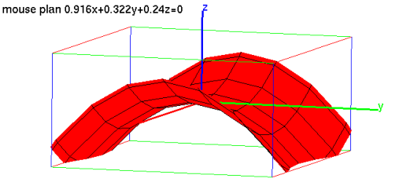

7.21.2 Animation of a 3D graph: animate3d
The animate3d command creates three-dimensional animations
using graphs of functions depending on a parameter. (See also
Section 7.4.2.)
-
animate takes three mandatory arguments and two optional
arguments:
-
expr, an expression involving three
variables, one of which will be regarded as the parameter.
- vars a list of the the (non-parameter)
variables in the expression, which can also specify ranges of
values var=a..b.
- param the name of the parameter, which can also
specify a range of values.
- Optionally, frames=n, where n is an integer specifying the
number of frames.
- Optionally, xstep, which can be
xstep=n to specify the discretization
step in the x direction.
- Optionally, ystep, which can be
ystep=m to specify the discretization
step in the y direction.
- Instead of xstep and ystep, you could use
the option nstep=n to specify the number of points used to
graph.
- animate3d(expr,vars,param,frames=n ⟨opt,xstep=n, ystep=m ⟩)
draws an animation consisting of graph of the function as the
parameter varies.
Example
Input:
animate3d(x^2+a*y^2,[x=-2..2,y=-2..2],a=-2..2, frames=10,display=red+filled)
Output:
The output is an animation beginning with:
